En la figura vemos la construcción correspondiente a la ceviana AA'. Como es habitual, el color azul representa los puntos que se consideran libres, en negro los que se obtienen a partir de ellos, destacándose en rojo los puntos finales de la construcción.
A la hora de traducir el enunciado a coordenadas baricéntricas el punto más complicado parece ser el de introducir o calcular los puntos A'(B) y A'(C), donde quizás haya que usar la complicada fórmula de la distancia entre dos puntos en coordenadas baricéntricas.
Sin embargo bastará considerar que uno de ellos es un punto cualquiera de la recta BC y hallar el otro como su simétrico respecto del punto A', que hará los cálculos más sencillos. Para este punto recordemos que, en general, si S' es el simétrico de S respecto de un punto H, entonces S' divide al segmento HS en la razón 2:-1.
|
Vamos a usar coordenadas baricéntricas, así que usamos el cuaderno Baricentricas.nb.
Introduciomos los puntos A', B', C' como puntos arbitrarios de la rectas BC, CA, AB: 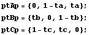 Hacemos lo mismo con los puntos A'(C), B'(A), C'(B) 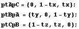 Calculamos los puntos A'(B), B'(C), C'(A) como los simétricos de A'(C), B'(A), C'(B) respecto de A', B', C'. 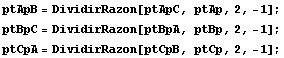 Hamos los puntos estrella, vértices de los paralelogramos. 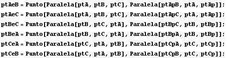 Seguimos hallando puntos ... 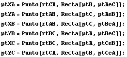 y más puntos ... 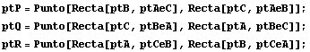 y finalmente otros tres más: 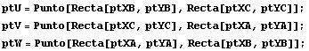 a) Ahora comprobamos que P, Q, R están en las medianas correspondientes a los vértices, A, B y C. Para ello, hallamos en cada caso el determinante formado por uno de los puntos P, Q, R y los extremos de la mediana correspondiente. Al anularse el determinante, los puntos están alineados. 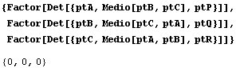 b) Entonces los lugares geométricos de los puntos P, Q y R serán las medianas del triángulo ABC. c) Demostrar que el triángulo UVW es homotético al triángulo ABC. Calcular el centro y la razón de la homotecia. Podemos comprobar la homotecia teniendo en cuenta que los lados homólogos BC, CA, AB y VW, WU y UV son paralelos. 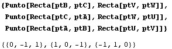 Vemos en efecto que las tres rectas se cortan en puntos del infinito (sus coordenadas suman 0), así que son paralelas. El centro de homotecia es 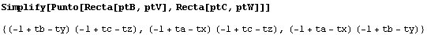 y lo podemos expresar así: 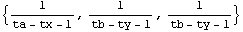 El cuadrado de la razón de homotecia es 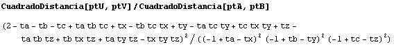 |